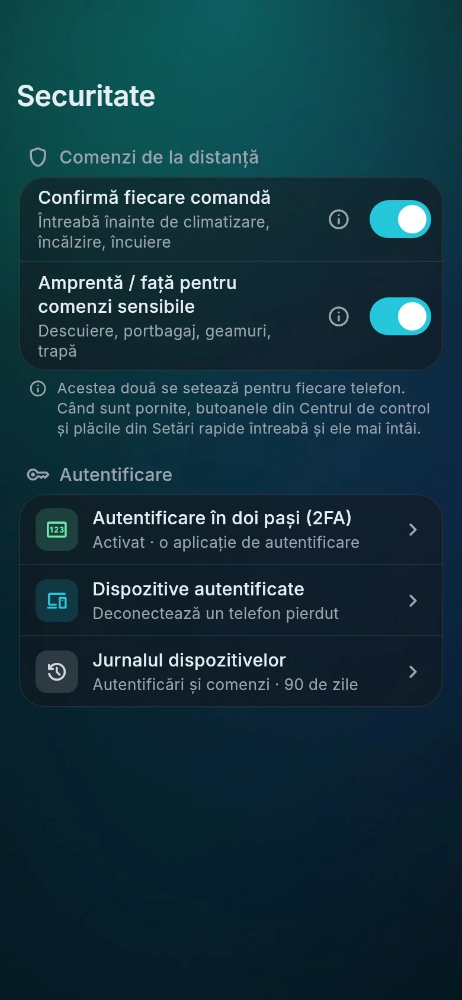
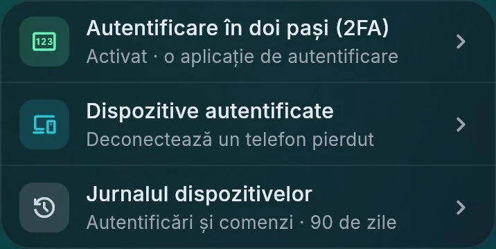
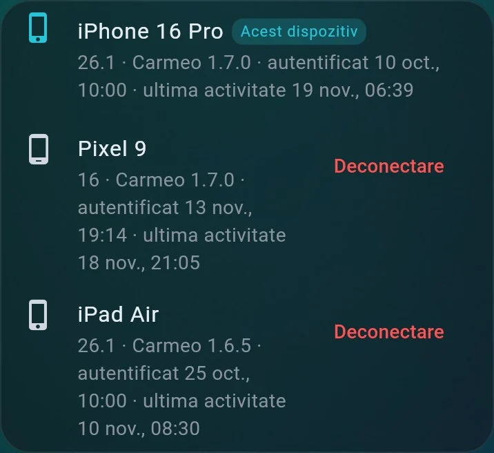
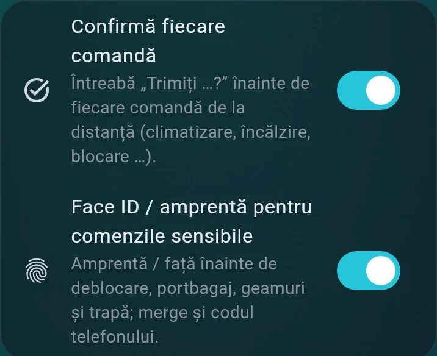
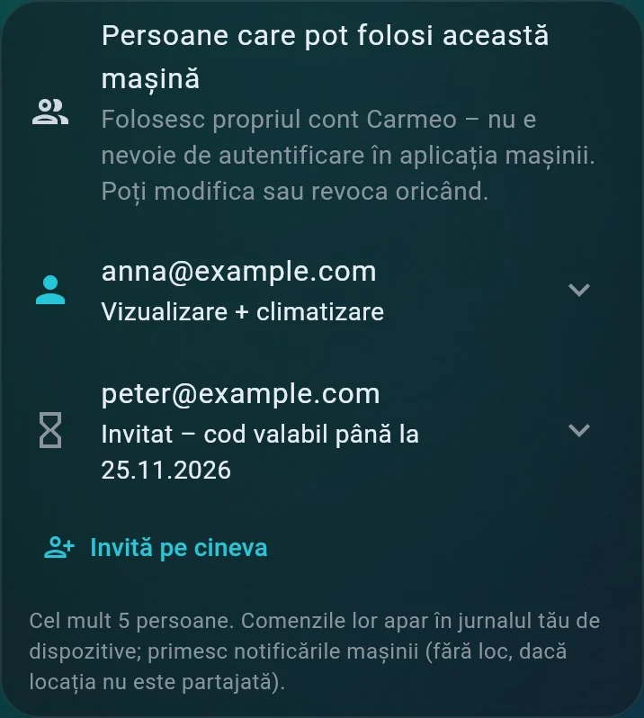
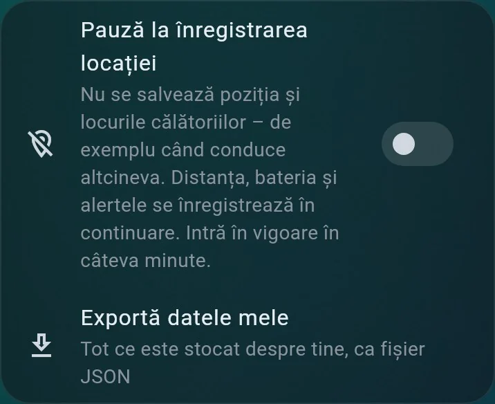

Securitate
Construit pentru ceva la fel de valoros ca mașina ta.
Autentificare în doi pași, lista tuturor telefoanelor autentificate, o protecție pe comenzile sensibile – și reguli clare despre ce stochează Carmeo.



Autentificare în doi pași și dispozitivele tale.
Protejează-ți contul cu o aplicație de autentificare. Vezi fiecare telefon autentificat, deconectezi de la distanță unul pierdut și primești o alertă la fiecare autentificare nouă.
- Jurnalul dispozitivelor – autentificări și comenzi pe dispozitive, păstrate 90 de zile.
- Fără adresă IP și fără locație – despre dispozitivele tale nu stocăm așa ceva.

Încă o verificare înainte ca mașina să se deblocheze.
Poți cere o confirmare înaintea fiecărei comenzi de la distanță sau Face ID ori amprentă înaintea celor sensibile: deblocare, portbagaj, geamuri și trapă.

Partajează mașina, nu parola.
Inviți până la cinci persoane. Ele își folosesc propriul cont Carmeo, iar tu decizi ce poate face fiecare: doar vizualizare, vizualizare și climatizare sau totul.
- Locația este oprită implicit – este partajată doar dacă o activezi.
- Revoci oricând – accesul se încheie în clipa în care elimini pe cineva.

Ce stochează Carmeo – și ce nu stochează niciodată.
Parola contului mașinii este folosită o singură dată, pentru autentificarea în cloudul mașinii, și nu este stocată niciodată. Cheile de autentificare și PIN-ul vehiculului sunt păstrate cu criptare AES-256, pe servere din UE. Fără reclame, fără analiză de date.
- Pauză la înregistrarea locației – călătoriile sunt atunci înregistrate fără locuri.
- Export sau ștergere – descarci tot ce stochează Carmeo sau îți ștergi contul, din aplicație.
Încearc-o pe mașina ta.
Carmeo este gratuit. Intră în grupul de testare deschisă pe iPhone sau Android.